Admin guide
How to set up the site, its ensembles, setup groups and seating plans, send emails, manage accounts and keep an eye on how it is running.
How to set up the site, its ensembles, setup groups and seating plans, send emails, manage accounts and keep an eye on how it is running.
1
Admins set the site up and look after it: its settings, ensembles, setup groups, seating plans and accounts. This guide covers the jobs only an admin can do.
An admin can also do everything a moderator can: add and edit members, keep polls up to date, take registers and add terms and their dates. Those jobs are described in the moderator guide, and what members see is in the user guide.
The green numbers in the screenshots, such as 1, match the numbers in the text beside them. The screenshots were taken on a practice site filled with made-up ensembles and members.
| Job | Moderator | Admin |
|---|---|---|
| Change the site settings and feature flags | No | Yes |
| Add and change ensembles, their admins and seating plans | No | Yes |
| Change setup groups, van-driver rotas, locations and instrument families | No | Yes |
| Send reminder emails by hand, or resend a failed email | No | Yes |
| Set another member's password or send them a reset email | No | Yes |
| Bring back an archived member or erase their personal data | No | Yes |
| Edit or archive other admins | No | Yes |
| Archive a term, and edit a single date from its own page | No | Yes |
| Import members, and read the monitoring page | No | Yes |
Saving the settings or feature flags, a Pollererer import, another member's password, or changes to another member's account asks you to type your own password again, then saves. You only need to do this once every three hours.
2
Admins have two extra items in the menu, and an extra card on the dashboard.
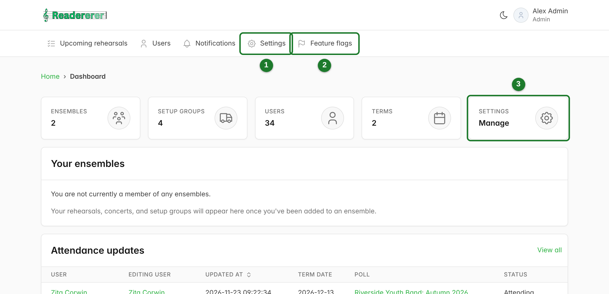
| What it is | |
|---|---|
| 1 | Settings: the site's options, and links to ensembles, instrument families, terms, locations and setup groups. |
| 2 | Feature flags: new features you can turn on for some or all members (chapter 9). |
| 3 | The Settings card opens the same page as the menu item. |
The Ensembles, Setup groups, Users and Terms cards open those lists. Every list has an Archive button on each row and a Show archived tick-box, so nothing you archive is lost: tick the box and click Unarchive to bring it back.
3
Click Settings in the menu. The buttons at the top 1 open the lists of ensembles, instrument families, terms, locations and setup groups. Below them is one long form: change what you need and click Save settings at the bottom.
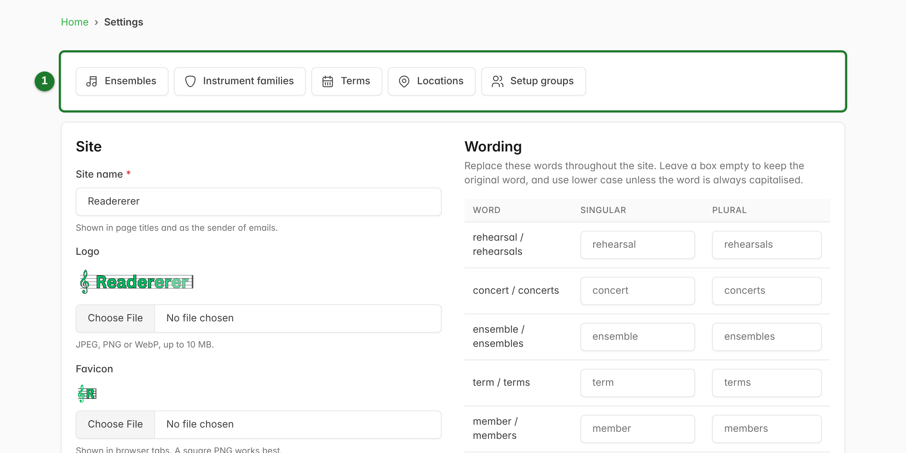
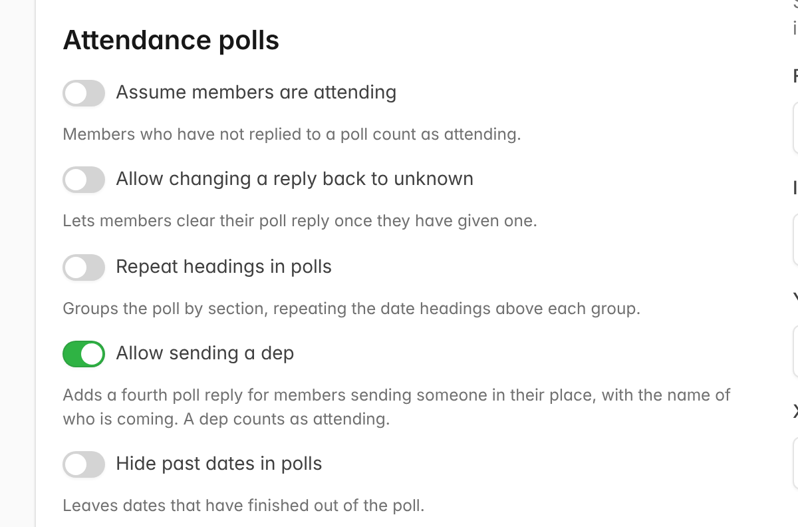
Time before a date to send reminders is how long before each date the site emails the attendance list to the ensemble's admins, the setup reminder to the setup group on duty and the reminder to the van driver. Leave it empty to only send them by hand. Time before a concert replaces it for concerts.
After reminders are sent decides what happens when a member changes a reply after that time:
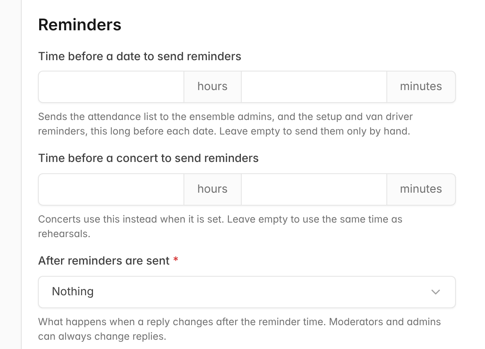
To let members log in with their Google account, create an OAuth client of type Web application in the Google Cloud console, add the redirect address the settings page shows, and paste its Client ID and Client secret here. Then turn on Allow login with Google. A member logs in with the Google account that has their email address. If you fill in Register new users from this domain, anyone with a Google account on that domain who has no account yet gets one with the role you choose.
4
Each ensemble has its own members, polls, registers and seating plan. Open the list from Settings › Ensembles or the Ensembles card on the dashboard.
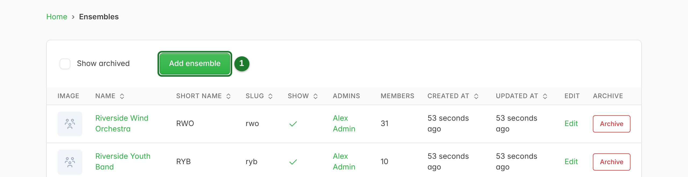
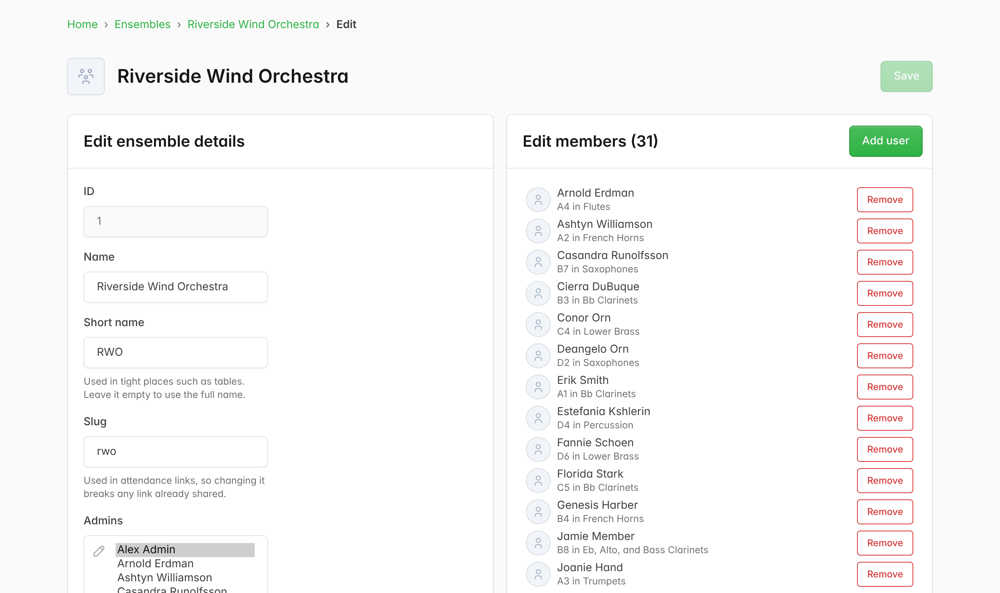
The right of the edit page, and the ensemble's Members page, list its members. Add user adds an existing account with their instrument family and seat; Remove takes them out of the ensemble without archiving their account. Members can also be added from their own edit page, as the moderator guide describes.
An account with the Ensemble role is a shared login for one ensemble, for example on a tablet at rehearsals. It can only fill in that ensemble's polls, and it cannot use login links, password resets or Google. The site creates one when an ensemble is created, with a random password nobody knows, and no other account can be given the Ensemble role or have it taken away. With the Claim accounts feature flag on, it also invites members to set up their own accounts (see the user guide).
With the Shared login on the ensemble page feature flag on, set its username and password in the Shared login card on the ensemble's page (click the ensemble's name in the list). Leave the password empty to keep the current one; setting one logs the shared login out on every device. An ensemble created before this existed may have no shared login yet: fill in a username and password there to create one. With the flag off, set the password from the login's own page with Set password (chapter 8).
5
Open an ensemble and click Seating plan. The button only appears when the ensemble has Seating plan enabled. Members are grouped into rows; anyone without a seat is under Unassigned.
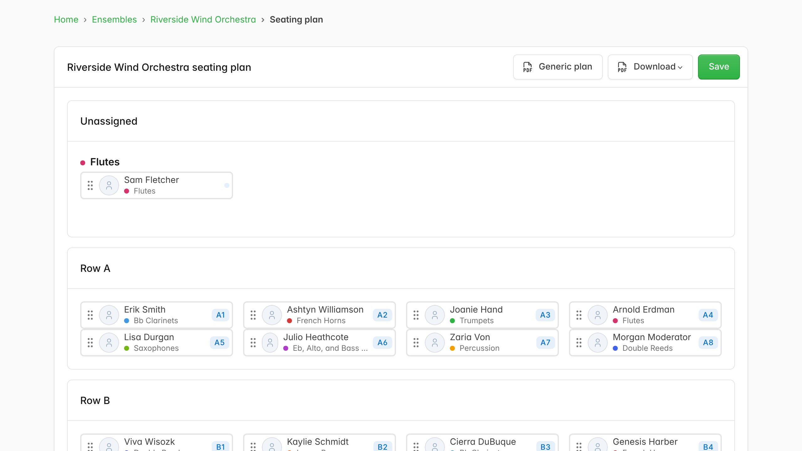
6
Open Settings › Setup groups and click Edit on a group, or Add setup group.
Click Update to save. When a change moves an upcoming date to a different van driver, the drivers affected are emailed their next three dates.
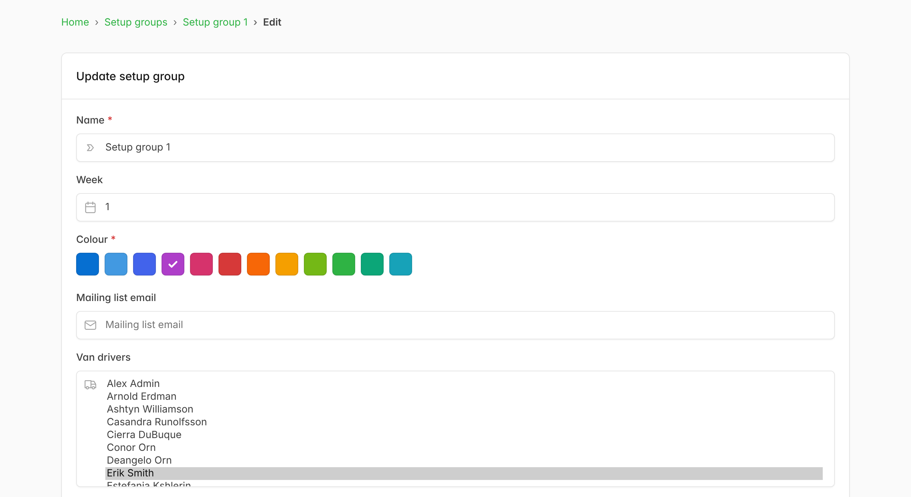
Each date's setup group is chosen on the term's form, as the moderator guide describes. If your site does not use setup groups or van drivers, turn them off in the settings (chapter 3).
Both are reached from the buttons at the top of the settings page and work like every other list: add, edit or archive.
7
The site sends three emails for each date: the attendance list to the ensemble's admins, the setup reminder to the setup group on duty and the van driver reminder. With a reminder time set (chapter 3), they go out automatically.
The emails already sent for the date are listed below the card.
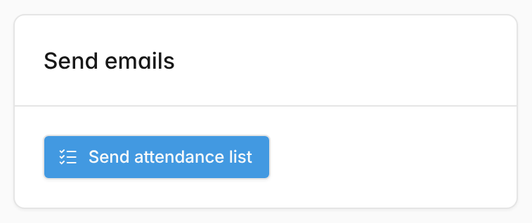
Notifications in the menu lists every email sent. When an email failed for some recipients, fix their email address first, then click Resend to failed recipients 1.
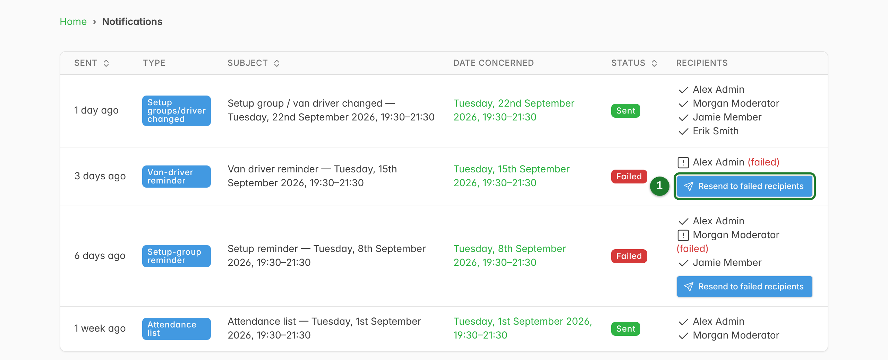
The site also emails people when an upcoming date's setup group or van driver changes, and, depending on the settings, the ensemble's admins when a reply changes after the reminders.
8
Adding, editing and archiving members is described in the moderator guide. Admins have a few more buttons on a member's page.
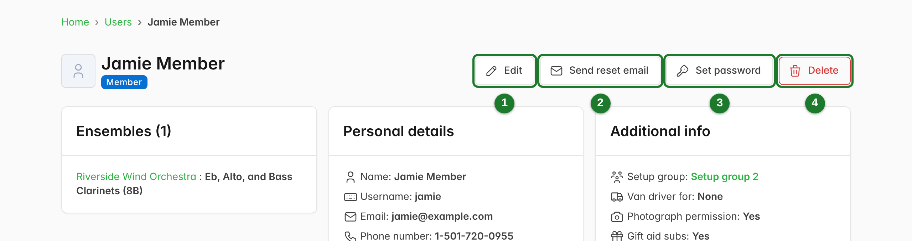
| What it does | |
|---|---|
| 1 | Edit: change their details, including their Role. |
| 2 | Send reset email: emails them a link to choose a new password. |
| 3 | Set password: type a new password for them. Tick Make them choose a new password when they next log in unless it is a shared ensemble login. |
| 4 | Delete: erases their personal data for good (see below). |
| Role | What it can do |
|---|---|
| Guest | Log in, but see nothing until given another role. |
| Ensemble | A shared login that fills in its ensemble's polls. Each ensemble gets one when it is created; no other account can be given this role. |
| Member | Reply to their ensembles' polls and keep their own details up to date. |
| Moderator | Look after members, polls, registers and terms. |
| Admin | Everything, including this guide. |
9
New features arrive switched off. On the Feature flags page you decide who gets each one and when, so you can try it with a few people before everyone.
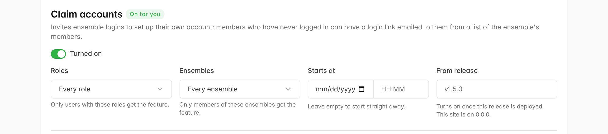
Click Save feature flags at the bottom. Changes take effect on each person's next page. Each flag's description says what it does; for example, Claim accounts lets members set up their own accounts from a shared ensemble login, and Concert details adds a description and dress code to each date.
10
The buttons at the bottom of the settings page open the import and monitoring pages.
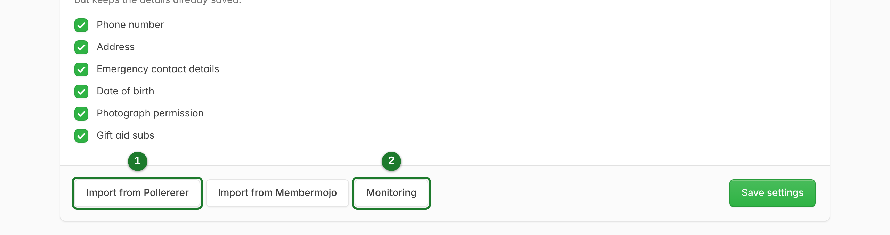
For a site moving from Pollererer. It only works on a new site with no ensembles, terms, dates or attendance yet.
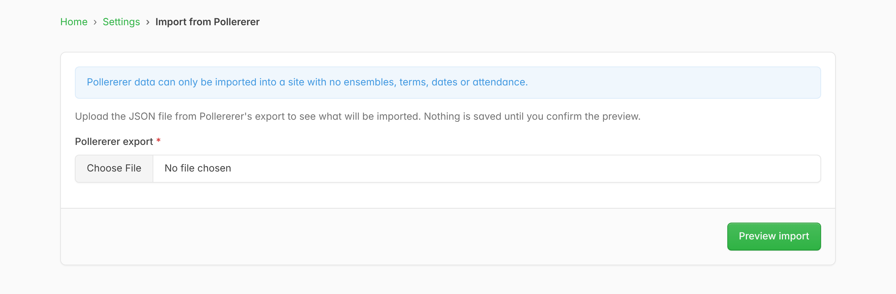
With the Membermojo import feature flag on, you can upload Membermojo's members.csv download, or let the site download it every night. Only active members are imported. They are matched to existing accounts by Membermojo number, then by email; their ensemble, instrument and setup group come from the matching columns. The import never changes a role or password. Members who have left Membermojo are listed, and are only archived if you tick the box. As with Pollererer, you see a preview before anything is saved.
The monitoring page shows whether the site is up and how quickly it answers (checked every five minutes), errors, slow pages and the most active users, over the last hour, six hours, day or week. Application log shows the newest entries in the site's log, filtered by level. Look here first if members report a problem.
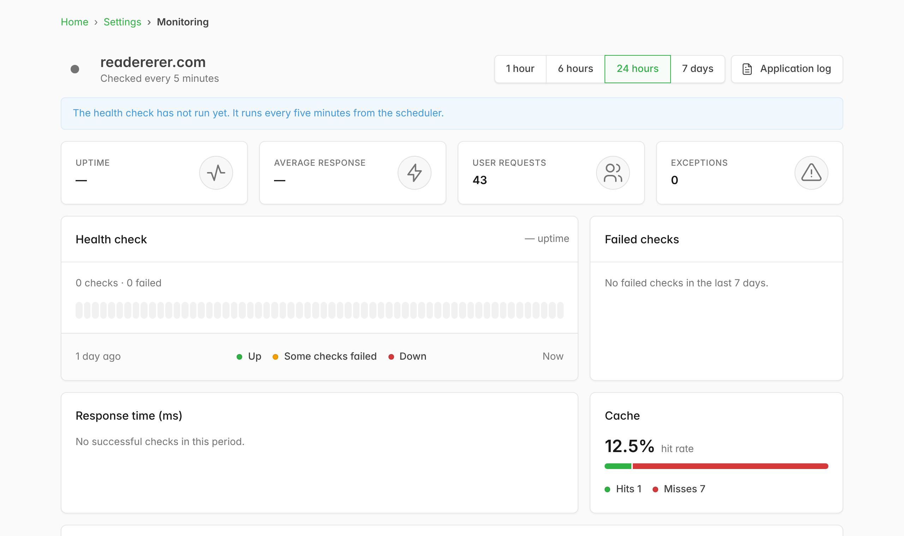
11
| I want to… | Go to |
|---|---|
| Change the site's name, logo or colour | Settings › Site |
| Change when reminders go out | Settings › Reminders |
| Stop members changing replies after the reminders | Settings › After reminders are sent › Lock the poll |
| Rename "term" or "ensemble" | Settings › Wording |
| Add an ensemble or change its admins | Settings › Ensembles › Add ensemble, or Edit |
| Arrange the seating | The ensemble › Seating plan |
| Change a van-driver rota | Settings › Setup groups › Edit |
| Add a venue | Settings › Locations |
| Send a reminder now | The date's page › Send emails |
| Resend a failed email | Notifications › Resend to failed recipients |
| Make someone a moderator | Users › the member › Edit › Role |
| Set a shared login's password | Settings › Ensembles › the ensemble › Shared login (or Users › the login › Set password) |
| Bring back an archived member | Users › Show archived › the member › Unarchive |
| Try a new feature with a few people | Feature flags |
| Check the site is working | Settings › Monitoring |